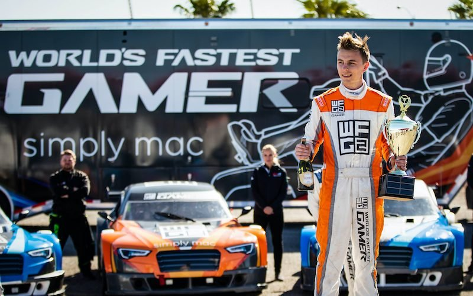
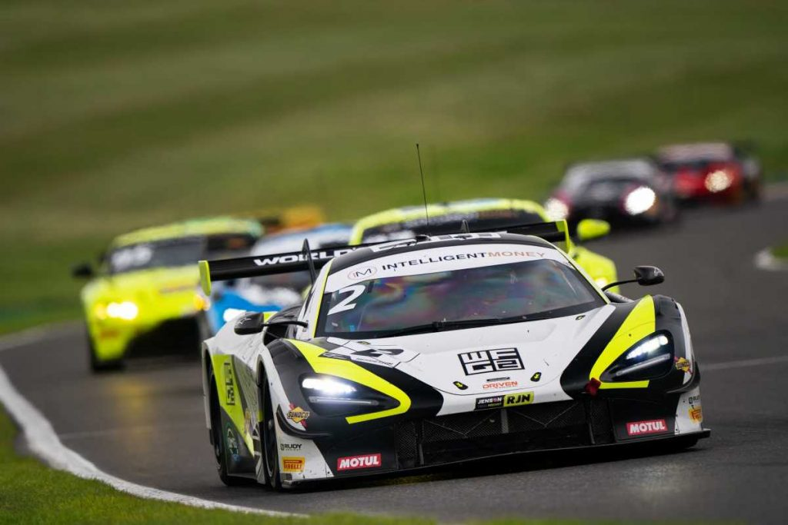

Mi nombre es James Baldwin, y he pasado de correr desde mi casa, a ser el primer simracer en ser ganador de las 24h de Le Mans reales.
James es uno de los pocos que han dado el salto a la competición real, y fue a través de una competición organizada por Mclaren, la llamada World Fastest Gamer
que le daba la oportunidad de ser piloto de simulador para el equipo británico.
Poco a poco fue labrándose un nombre compitiendo en diferentes categorías, hasta llegar donde está hoy en día que es
en el equipo oficial de Mclaren en el GT World Challenge Europe Endurance Cup.
|  |  |
|---|---|
| James ganando la final de WFG de McLaren | Tour por su habitación dedicada al simracing |